Late breakfast. Early dinner. Food you can shop at Costco, Foodland, Times, and Don Quijote.
Mark Souza · Home cook, not a clinic · Kitchen-estimate macros
A note from the kitchen
I’m Mark. I live in Honolulu.
About five years ago I started eating keto and stayed with it. Not as a 30-day challenge and not as a personality. It stuck because I could keep making food I already understood — pork, ahi, shrimp, eggs, cabbage, SPAM Classic — without turning my kitchen into a bakery for sugar-free desserts.
I still eat like someone who lives in Hawaii. I just skip the two scoops of rice and the sauces that are doing more sugar work than they admit. If a dish needs an ingredient I cannot find at Costco, Foodland, Times, or Don Quijote, I usually do not bother publishing it.
Ketogenic Chef is the name I put on that cooking. I am a home cook, not a clinic and not a meal-prep company. This PDF is a week of food I actually make — the same plates on KetogenicChef.com — plus a grocery list and a leftover plan so you are not inventing dinner at 6 p.m.
— Mark Souza Honolulu
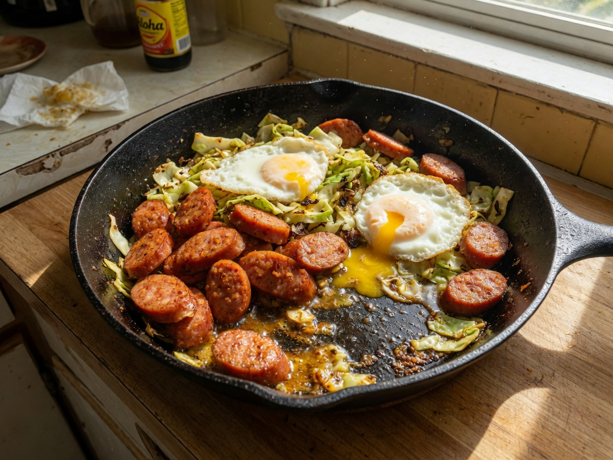
Nothing in this plan diagnoses, treats, or cures any condition. If you take medication or have a medical question, talk to a clinician who knows your chart. Macros are kitchen estimates, labeled as estimates.
How to use this week
Shop once, cook the pork once. One Costco run plus a fill-in at Foodland/Times or Don Q. Start the kalua pig on Day 1 or the night before.
Print page 6 and take it to the store. Shop from the checkboxes, not from memory at the sample tables.
Tape page 11 to the fridge. That grid is the whole week in one look.
Read sausage and sauce labels. Island Portuguese sausage and chili sauces are where sugar hides.
Repeat meals on purpose. Eggs and leftover pork are the point, not a failure of meal prep.
Written for one adult who eats like I eat — two solid plates a day. Feeding two: double the eggs, shrimp, and ahi. Still make one 4½–5 lb kalua pork. That pot stretches.
Mark Souza · Honoluluketogenicchef.com2
The shape of the day
How I eat (the window, in plain language)
Most days I stop eating in the evening and I do not start again until late morning. The eating window lands around 10:30 a.m. to 6:30 p.m., give or take. Some days it is closer to 8 hours. Some days it stretches toward 10. I am not running a stopwatch.
Late breakfast is the first real meal. Eggs, sausage, leftover kalua, musubi without rice. Coffee before that is black or with a splash of cream if I want it. I do not build a “fasting stack” of supplements.
Early dinner is the second meal. Ahi, shrimp, mixed plate, salmon. I like being done eating while there is still light. If you get home at 8 p.m., eat dinner at 8 p.m. Do not skip food to protect a window you read in a PDF.
Water, unsweetened tea, and black coffee live outside the meals. I do not drink juice, soda, or anything with maltodextrin in the “zero” label without reading it.
Two meals is how this week is written. If you want a small third plate inside the window — leftover shrimp, cheese, an avocado — that is your call. I would rather you eat enough at the two meals.
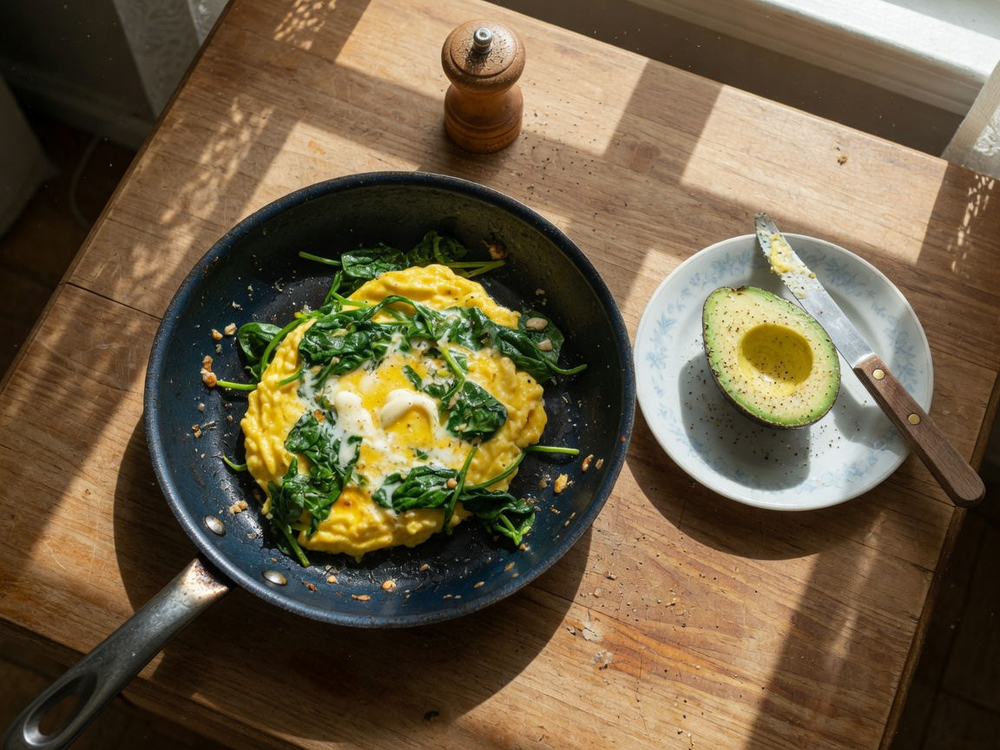
The window is optional. It fits my day. It is not a medical treatment. It does not “repair cells,” manage insulin, or guarantee weight loss. If skipping morning food makes you feel awful, eat breakfast when you wake up. The recipes still work with three meals.
Macros in this plan are kitchen estimates from labels and typical USDA numbers for the portions I wrote down. Your sausage brand and pork fat cap will move the numbers. Treat them as a compass, not a lab report. Most plates stay around or under 10 g net carbs unless I note otherwise.
Foodland or Times: Portuguese sausage (read the label), ahi if the price is sane, alaea salt, garlic, chili pepper water.
Home, immediately
Salt the pork, start the slow cooker on low. Strip the rotisserie while it is warm. Meat in a container.
Optional Don Q
Only if you still need nori, liquid smoke, sesame oil, SPAM Classic.
Night / next morning
Kalua is dinner Day 1. Shred extra. That pork is Days 2, 5, and 7.
Mark Souza · Honoluluketogenicchef.com3
Read this before you shop
Island sugar traps
I lost more keto weeks to “local flavor” bottles than to poi or bread. If a sauce in Hawaii has hidden sugar, I say so. SPAM Classic, not Teriyaki. Homemade spicy ahi sauce, not the poke-bar tub. No flour on the shrimp. No pineapple-teriyaki “Hawaiian” food. No keto poi. No butter mochi.
Looks harmless
What I do instead
SPAM Teriyaki, Hot Honey, or glazed shop musubi
SPAM Classic only; egg-slab musubi at home
Poke-bar “spicy ahi” and bottled poke sauce
Plain ahi + mayo + chili garlic you already tasted
Portuguese sausage with sugar high on the label
Switch brands, or use less sausage and more eggs
Shrimp-truck flour dredge and sugary garlic butter
Dry shrimp, no flour, butter and garlic in the pan
Teriyaki, unagi, “Hawaiian BBQ,” sweet chili
Salt, smoke, shoyu by the teaspoon, chili pepper water
Store mac salad and bottled island dressing
Mayo, vinegar, cabbage
Furikake with sugar in the first five ingredients
Sesame + salt, or unsweetened nori komi
Rotisserie chicken that tastes sweet
Costco bird, or roast your own
Shoyu has a little sugar. A teaspoon in a pan for four people is not the same as a teriyaki bath. Kewpie mayo has a little sugar; Best Foods Real does not. I use both, on purpose, and I do not pretend they are identical.
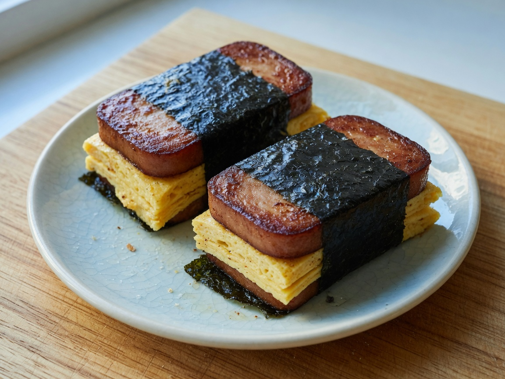
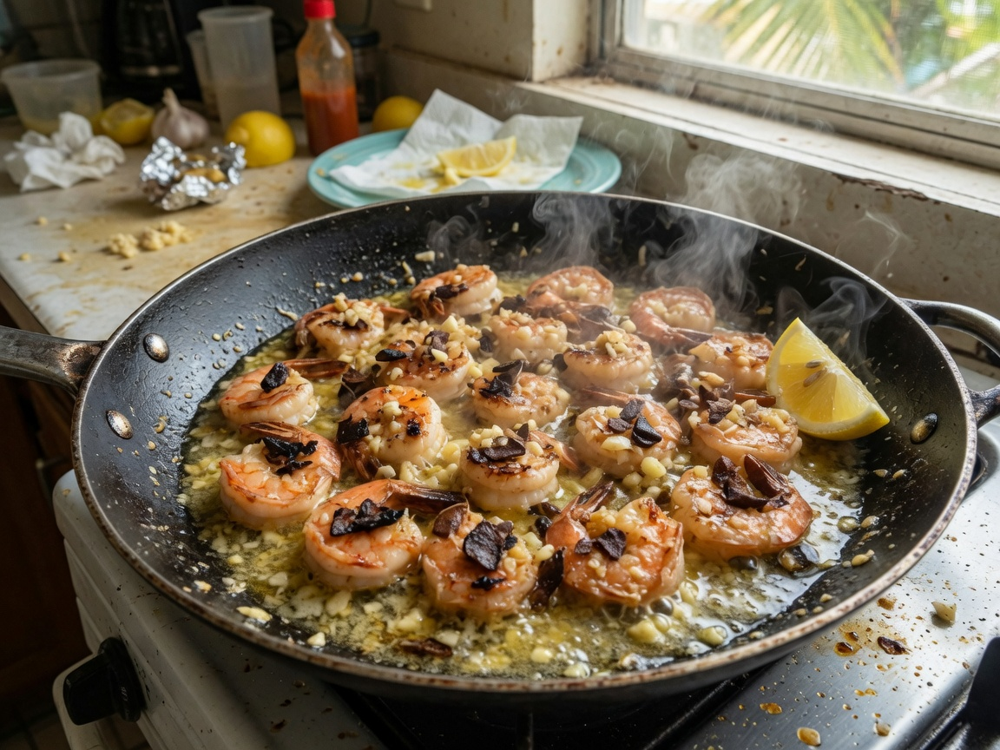
Left: musubi with an egg slab, not rice. Right: garlic shrimp with no flour. Full recipes live on the site.
Mark Souza · Honoluluketogenicchef.com4
One loop I have actually driven
Saturday shopping trip
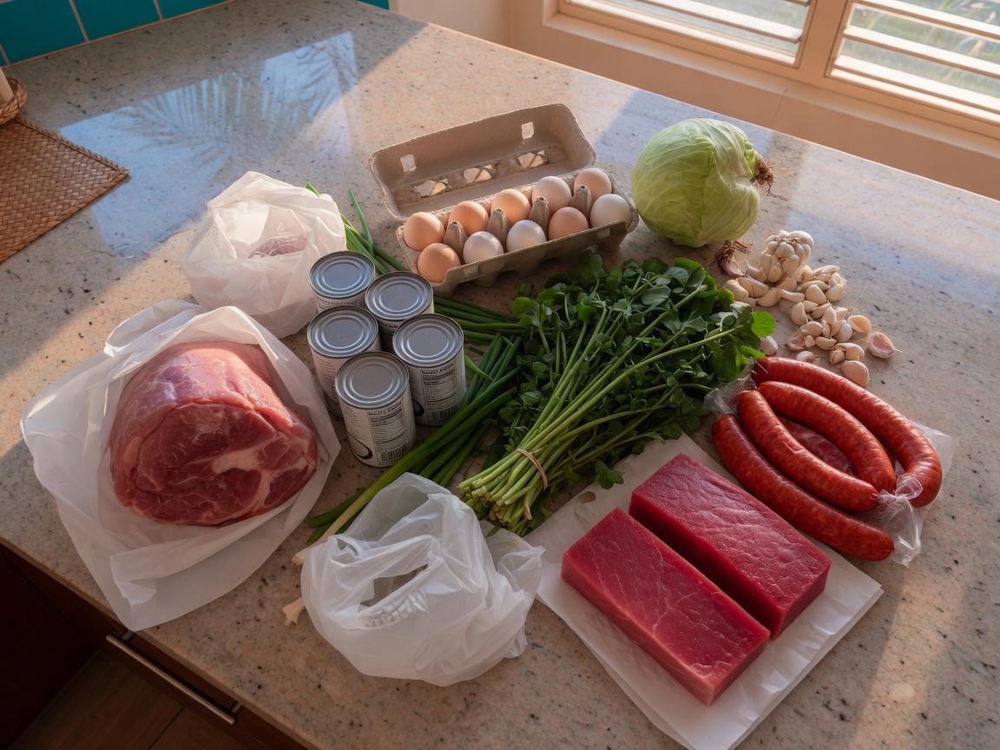
Stop 1 — Costco
Iwilei, Hawaii Kai, or Kapolei. Go early. Bulk protein and the boring fat.
Boneless pork shoulder, 4½–5 lb
Rotisserie chicken
Frozen large shrimp, ~2 lb
Eggs 24-count · Butter 1 lb · Avocados
Green cabbage, 2 large heads
Won bok / napa if they have it
Spinach or mixed greens, big box
Mayonnaise · Oil · Frozen salmon (backup)
If ahi steaks are priced like ahi and not like jewelry, grab a pack. If not, Foodland is Stop 2.
Stop 2 — Foodland / Times
Whichever is on the way home.
Portuguese sausage (read the label)
Ahi steaks or poke-grade ahi, 1–1½ lb, plain
Alaea Hawaiian salt
Lemons or limes · Green onions
Garlic, ginger
Broccoli or asparagus
Chili pepper water without sugar
Watercress if the bunch looks alive (optional breakfast swap)
Stop 3 — Don Quijote
Only if you still need the Japanese pantry.
Nori sheets
Toasted sesame oil
Chili garlic sauce (read sugar)
Liquid smoke if you do not have it
Unsweetened furikake or sesame seeds
Shoyu or tamari · Kewpie (optional)
SPAM Classic if Costco was a zoo
Skip the sample tables. That is how you eat three ounces of mystery glaze before you get to the car.
Go home. Start the kalua pork if Day 1 is tomorrow, or start it now on low if you want pork tonight.
Mark Souza · Honoluluketogenicchef.com5
Print this page · take it to the store
Oahu grocery list
Quantities are for one person, this 7-day plan, with leftover pork and chicken on purpose. Costco packs run large. That is how Honolulu shopping works. Check it off as it goes in the cart.
SPAM Classic, 12 oz (Costco 8-pack if you will use it)
Nori sheets
Sesame oil · Sesame seeds
Chili garlic sauce (check sugar)
Liquid smoke
Shoyu or tamari
Kewpie (optional)
Rice vinegar
Optional pork rinds for musubi crunch
Pantry you probably have: black pepper, paprika, cayenne, chili flakes, coffee or unsweetened tea.
Label check at the case. If sugar is in the first five ingredients on sausage, furikake, or chili sauce, put it back.
Take this page to Costcoketogenicchef.com/plan6
This is the plan
Leftover strategy
Kalua pig is not one dinner. A 4½–5 lb shoulder gives you roughly eight servings of meat. Cook it early. That one pot is how the rest of the week stays easy.
When
What happens to the pork
Day 1 dinner
Fresh kalua pig + cabbage
Day 2 breakfast
Eggs + reheated kalua
Day 3–4
Fridge. Do not nibble it into nothing.
Day 5 dinner
Mixed plate: kalua + rotisserie + slaw
Day 6–7
Hash, lettuce wraps, or freeze 2 servings
Rotisserie chicken is stripped the night you buy it. Meat in a container. Breast dries out in the microwave — eat it cold on greens or warm it in a skillet with butter.
Shrimp does not love day 3. Cook Kahuku shrimp and eat it that night. Leftover garlic shrimp is a fine next-day breakfast if you reheat gently.
Ahi is not meal prep. Buy it close to the day you will eat it. Spicy ahi gets mixed right before the plate. Seared leftovers are better cold than recooked.
Cabbage is the starch replacement all week: in the kalua pot, in the sausage skillet, in the mixed-plate slaw. Two heads is not too much.
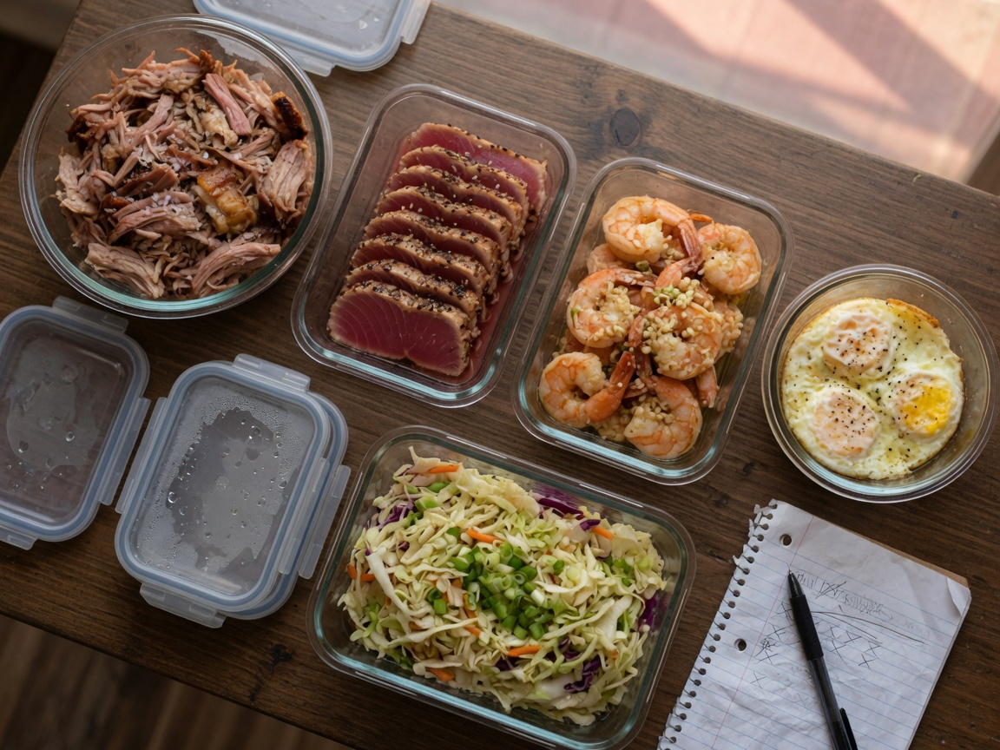
Fridge map (midweek)
Shredded kalua pig in a clear container, juices in a jar
Pulled rotisserie meat
Half a cabbage or a bag of shreds · Eggs · Butter
Chili pepper water, mayo, one chili sauce you already vetted
Ahi bought close to the day you will eat it — not “in case”
If the fridge is only condiments and a Costco cheese slice, you skipped the pork. Start the slow cooker tonight and slide the days.
Mark Souza · Honoluluketogenicchef.com7
The 7 days
Days 1–2
Times are examples of an 8–10 hour window: first meal around 10:30–11:00 a.m., second meal around 5:30–6:30 p.m. Move both. Full recipes: ketogenicchef.com/recipes
Day 1 — Start the pot
Late breakfast
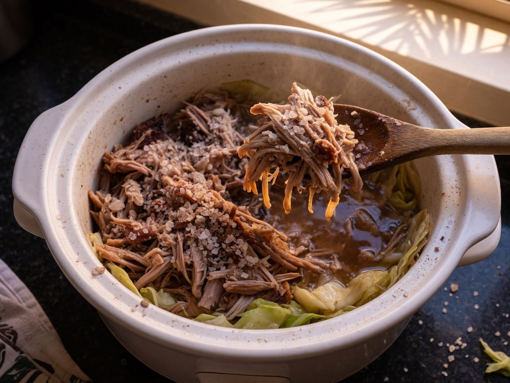
Early dinner
Late breakfastEggs with spinach and avocado. Scramble 3 eggs in butter with a handful of spinach. Salt, pepper. Half an avocado. You can cook this while the pork is already in the slow cooker. If Foodland had a good bunch of watercress, cook watercress, bacon, and eggs instead.
Early dinnerSlow-Cooker Kalua Pig with Cabbage.Full recipe on the site. Start the cooker in the morning (or last night). Cabbage goes in at the end. Shred more pork than tonight’s plate. Cool it. That is Days 2 and 5.
Kitchen-estimate, whole day: ~720 calories · ~54 g fat · ~47 g protein · ~8 g net carbs
Day 2 — Pork for breakfast, ahi at night
Late breakfast
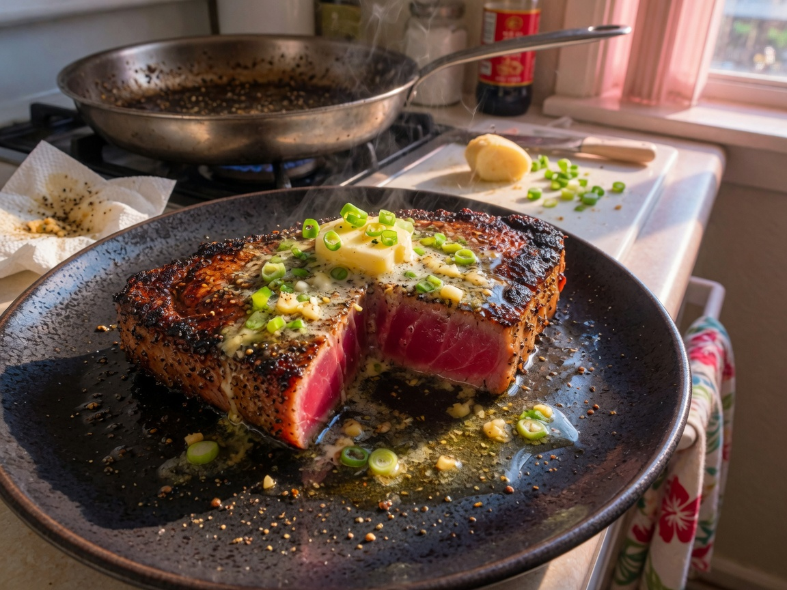
Early dinner
Late breakfastLeftover kalua pig with 2 fried eggs. Reheat a cup of pork in a skillet. Eggs on top. Optional leftover cabbage.
Early dinnerPan-Seared Ahi with Ginger-Garlic Butter, greens or broccoli on the side. Recipe. If ahi is expensive today: baked salmon from the backup list.
Kitchen-estimate, whole day: ~820 calories · ~52 g fat · ~78 g protein · ~6 g net carbs
Mark Souza · Honoluluketogenicchef.com8
The 7 days
Days 3–4
Day 3 — Sausage skillet, garlic shrimp
Late breakfastEarly dinner
Late breakfastPortuguese Sausage Breakfast Skillet. Label-check the sausage. Four servings in the pan — eat one, refrigerate the cabbage-sausage mix. Recipe.Early dinnerKahuku-Style Garlic Shrimp (No Flour) over won bok or salad. Eat the garlic. Your kitchen will smell like a shrimp truck. That is correct. Recipe.
Kitchen-estimate, whole day: ~900 calories · ~67 g fat · ~61 g protein · ~10 g net carbs
Day 4 — Musubi and spicy ahi
Late breakfast
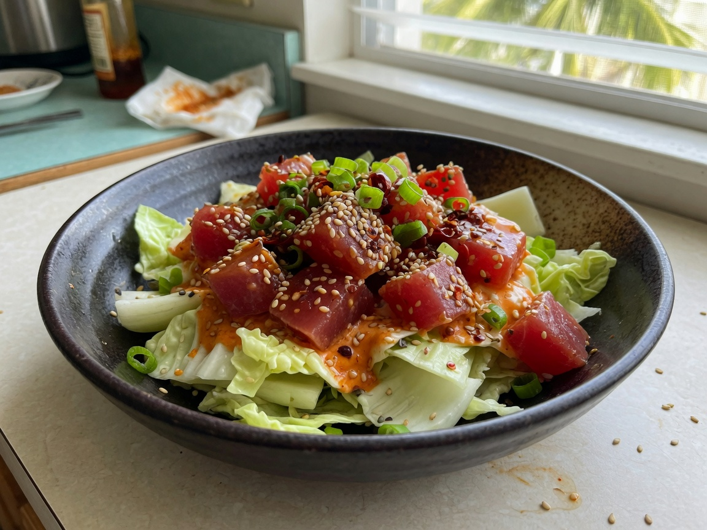
Early dinner
Late breakfastSPAM Musubi Without Rice (2 pieces). Classic only. Cucumber or leftover greens on the side. Recipe. Make a pan; wrap extras for the car.
Early dinnerSpicy Ahi on Won Bok (Not a Rice Bowl). Mix the sauce yourself. Do not buy the sweet tub. If you do not eat raw fish: sear the cubes 20 seconds and toss off heat, or repeat pan-seared steaks. Recipe.
Kitchen-estimate, whole day: ~920 calories · ~70 g fat · ~55 g protein · ~9 g net carbs
Mark Souza · Honoluluketogenicchef.com9
The 7 days
Days 5–7
Day 5 — Mixed plate night
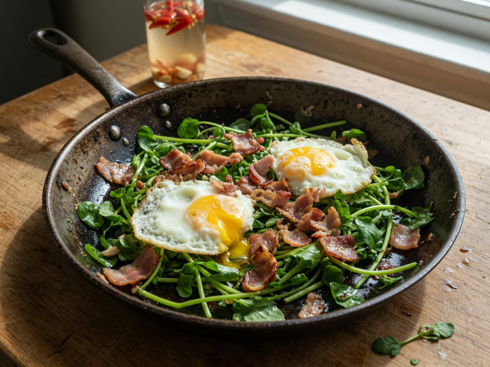
Late breakfast
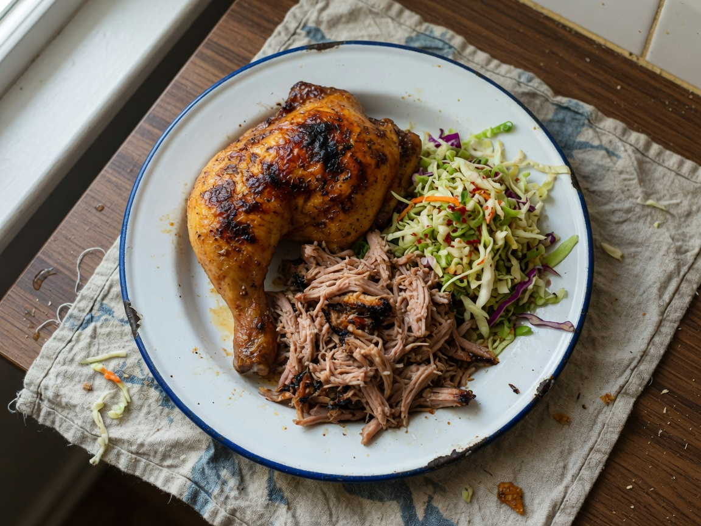
Early dinner
Late breakfastCheese-and-spinach omelet (2–3 eggs) + leftover sausage-cabbage if you have it. Avocado if you are hungry. Watercress and bacon if the bunch survived.
Early dinnerWeeknight Mixed Plate: rotisserie chicken, leftover kalua, chili-cabbage slaw. Do not use teriyaki chicken from a grab-and-go case. Recipe.
Kitchen-estimate, whole day: ~900 calories · ~62 g fat · ~62 g protein · ~9 g net carbs
Day 6 — Easy fish, easy salad · Day 7 — Stir-fry the rest
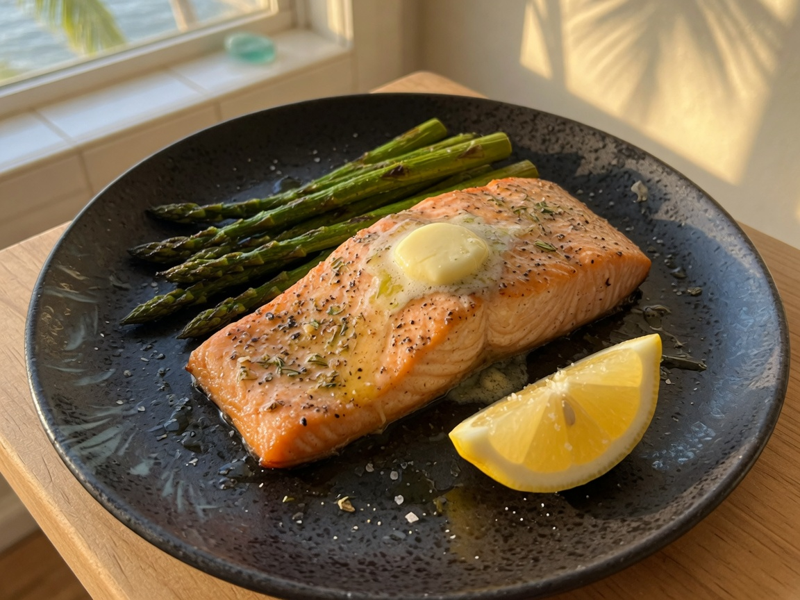
Day 6 dinner
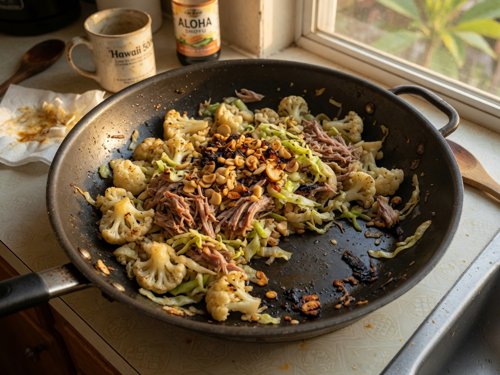
Day 7 dinner
Day 6 breakfast Cobb-ish plate: leftover chicken or shrimp, 2 hard-boiled eggs, avocado, greens, olive oil, salt. No sweet dressing.
Day 6 dinnerBaked salmon, asparagus, butter. 400°F, salmon 12–15 minutes, asparagus alongside, lemon. This day is here on purpose. You already cooked the project recipes.
Day 6 kitchen-estimate: ~780 calories · ~58 g fat · ~55 g protein · ~8 g net carbs
Day 7 breakfast Eggs however you want them + last of the avocado. Or a leftover musubi.
Day 7 dinnerCauliflower stir-fry with leftover kalua or rotisserie. Dry-fry riced cauliflower, garlic, leftover pork, a handful of cabbage, splash of shoyu, sesame oil. If the cauliflower is wet, you crowded the pan. It will never be rice. It has to be hot and salty and mixed with pork.
Day 7 kitchen-estimate: ~700 calories · ~48 g fat · ~50 g protein · ~10 g net carbs
Mark Souza · Honoluluketogenicchef.com10
Tape this to the fridge
Printable week grid
Window example: first meal ~11:00 a.m., second meal ~6:00 p.m. Move both together. Check the leftover column the night before so you are not staring at the fridge hungry.
Day
Late breakfast
Early dinner
Cook / leftover move
1
Eggs, spinach, avocado
Kalua pig + cabbage
Start pork in the morning
2
Kalua + eggs
Pan-seared ahi, ginger-garlic butter
Freeze extra pork if the pot is huge
3
Portuguese sausage skillet
Kahuku garlic shrimp, no flour
Save extra sausage-cabbage
4
SPAM musubi, no rice (×2)
Spicy ahi on won bok
Mix ahi sauce at the last minute
5
Spinach omelet
Mixed plate: rotisserie + kalua + slaw
Strip the Costco chicken
6
Cobb-ish leftovers
Salmon + asparagus
Backup night on purpose
7
Eggs + avocado
Cauli stir-fry with leftover pork
Freeze remaining kalua in 1-cup bags
Repeatable backup meals
Use these if fish looks tired, if you do not want to cook, or if you already ate the planned plate.
Eggs, spinach, avocado. 3 eggs scrambled in butter, handful of spinach, half an avocado.
Tuna + avocado. Can of tuna, mayo, pepper, avocado. Tuna and salt on the label, not a sweet flavor cup.
Rotisserie on greens. Chicken, olive oil, lemon, salt. A plate, not a personality.
Cauliflower stir-fry. Frozen riced cauliflower (Costco), leftover pork or chicken, garlic, splash of shoyu. Cook the cauli dry.
Coconut-milk chicken thighs with bok choy if you want a pot that is not kalua. Recipe on the site.
Salt, water, sleep. Not magic. A pinch of salt in water on a muggy Honolulu day is something I actually do. I do not sell electrolytes.
Fridge copyketogenicchef.com/plan11
Keep cooking
After this week
Make the kalua pig again. It is the one recipe that pays rent. If a plate from this week is the one you keep cooking in month two, that is the whole idea. I still make the garlic shrimp and the mixed plate on ordinary Tuesdays. I do not still follow a numbered Day 4.
Not medical advice. I am a home cook in Honolulu. This plan is food I eat, written down. It is not a diagnosis, a treatment, or a promise that you will lose weight, control a disease, or “optimize” anything. If you are pregnant, if you take insulin or other medication, or if you have a medical condition, ask a clinician who knows your chart before you change your meals or your meal timing.
Kitchen-estimate macros. Calories, fat, protein, and net carbs are estimates from typical labels and standard references for the portions in this file. They are not laboratory analyses and they will not match every brand on an Oahu shelf.
Affiliates. If a live version of this plan includes product links, a separate affiliate disclosure applies (see the site footer). This file is written so it can ship without affiliate URLs.